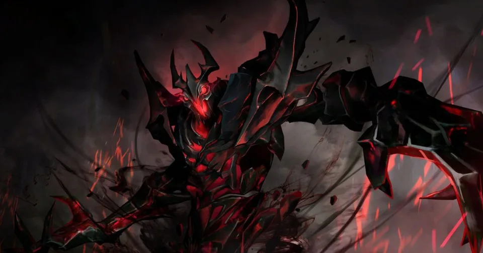
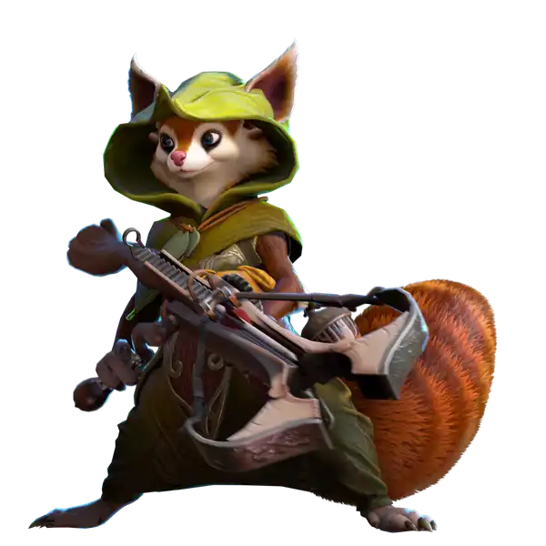

👑 Главный хедлайнер турнира
Гранд-финал DotaArena 2026: Битва стихий в Москве
Маскот турнира Hoodwink и Shadow Fiend на главной киберспортивной арене. Решающий гранд-финал турнира с призовым фондом 600 000 ₽.

Переход с тяжеловесных PNG-24 и несжатых JPEG на современные форматы WebP и векторный SVG. Конвертация, изменение геометрии под экраны высокой плотности и радикальное сокращение веса страницы.
Маскот турнира Hoodwink и Shadow Fiend на главной киберспортивной арене. Решающий гранд-финал турнира с призовым фондом 600 000 ₽.
Прямые денежные выплаты победителям. 1 место — 350 000 ₽, 2 место — 150 000 ₽, 3 место — 100 000 ₽.
Прямой эфир со стадиона: Full HD трансляция с комментариями аналитиков.

Лицо рекламной кампании турнира. Сжатие с сохранением прозрачности.

Double Elimination сетка. Верхняя и нижняя сетки в формате BO3.
Обязательное присутствие капитанов в Discord судейского комитета.
Чистый SVG-логотип: бесконечная чёткость при весе менее 1 килобайта.
Приём заявок открыт. Успейте закрепить слот для вашего коллектива.
Подробный технический анализ 7 ключевых изображений сайта до и после оптимизации.
| Изображение и Назначение | Исходный формат и Размеры | CSS Display | Новый формат и Размеры | Исходный вес | Новый вес | Экономия (%) | Обоснование формата |
|---|---|---|---|---|---|---|---|
|
cybersport_tournament Главный баннер турнира |
JPEG 1024 × 537 px |
480 × 280 px в 2.1× меньше |
WebP 960 × 503 px |
127.7 КБ | 34.8 КБ | –72.7% | WebP эффективнее сжимает фотографические сцены и градиенты без блочных артефактов JPEG. |
|
shadow_fiend_bg Баннер арены и стрима |
JPEG 1024 × 537 px |
320 × 360 px в 3.2× меньше |
WebP 960 × 503 px |
127.7 КБ | 34.8 КБ | –72.7% | WebP устраняет цветовую постеризацию на темных фонах сценического освещения. |
|
storm_spirit_render Рендер Storm Spirit |
PNG-24 1440 × 1440 px |
260 × 260 px в 5.5× меньше! |
WebP 600 × 600 px |
935.6 КБ | 34.0 КБ | –96.4% | WebP сжатие альфа-канала сокращает полупрозрачные свечения и молнии в 27 раз. |
|
hoodwink_render Маскот Hoodwink во весь рост |
PNG-24 1440 × 1440 px |
280 × 280 px в 5.1× меньше! |
WebP 600 × 600 px |
1 512.6 КБ | 44.0 КБ | –97.1% | Критический перерасход в PNG. WebP сохраняет тонкие волоски меха при весе 44 КБ. |
|
shadow_fiend_render Рендер Shadow Fiend |
PNG-24 1440 × 1440 px |
280 × 280 px в 5.1× меньше! |
WebP 600 × 600 px |
1 332.9 КБ | 75.7 КБ | –94.3% | Сложные частицы огня и дыма в альфа-канале сжаты алгоритмом WebP lossy alpha. |
|
pudge_render Рендер Pudge |
PNG-24 1440 × 1440 px |
260 × 260 px в 5.5× меньше! |
WebP 600 × 600 px |
999.7 КБ | 32.1 КБ | –96.8% | Даунскейл до 600px с запасом для Retina 2x + WebP q=82 дали выигрыш в 31 раз. |
|
dota2_logo Официальный логотип |
PNG 634 × 591 px |
40 × 40 px в 15× меньше! |
SVG Vector (100×100) |
21.5 КБ | 0.8 КБ | –96.3% | Векторный SVG масштабируется без размытия на любом экране, весит 848 байт и красится через CSS. |
| ИТОГО ПО ВСЕМ КЛЮЧЕВЫМ АССЕТАМ: | 5 068.7 КБ | 254.2 КБ | –94.98% (Экономия 4.81 МБ) | ||||
Создано два варианта сжатия для определения оптимального порога качества без заметных глазу искажений.

Проблема: При агрессивном сжатии q=50 появляются артефакты размытия волосков хвоста, шум квантования вокруг прозрачных контуров и потеря резкости в мелких деталях костюма.
Результат: Качество q=82 находится на пороге перцептивной прозрачности (visually lossless). Все тонкие элементы меха и свечение сохранены без артефактов, при этом размер файла на 97% меньше оригинала.
Все оригинальные файлы скопированы в неизменном виде в папку images/originals. Рабочие версии отделены от эталонных.
Зафиксированы форматы, исходные пиксельные размеры, вес в КБ и CSS-размеры отображения. Выявлен сильный перерасход в рендерах 1440×1440 px.
Для фото применён WebP, для графики с прозрачностью — WebP (с lossy альфа-каналом), для логотипа турнира — векторный SVG.
Ширина рендеров уменьшена с 1440 px до 600 px (2x запас под Retina-экраны для карточек шириной 260–300 px) с сохранением точных пропорций.
Протестированы варианты сжатия. Установлено оптимальное качество q=82, устраняющее артефакты при сохранении микродеталей.
Сгенерированы 6 файлов WebP и 1 векторный SVG в каталоге images/optimized с понятными именованиями.
Разметка HTML полностью переведена на ассеты из images/optimized/. Оригиналы сохранены для сверки и отчёта.
Суммарный вес графики снизился с 5 068 КБ до 254 КБ. Реальная экономия трафика составила 94.98%.